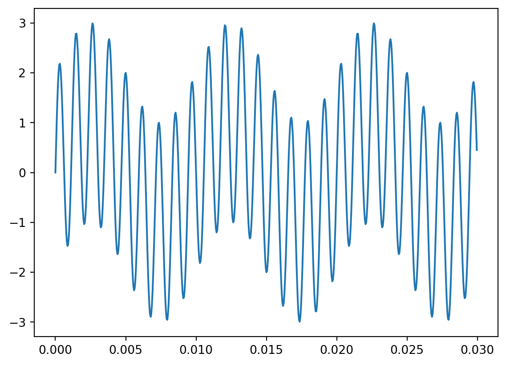
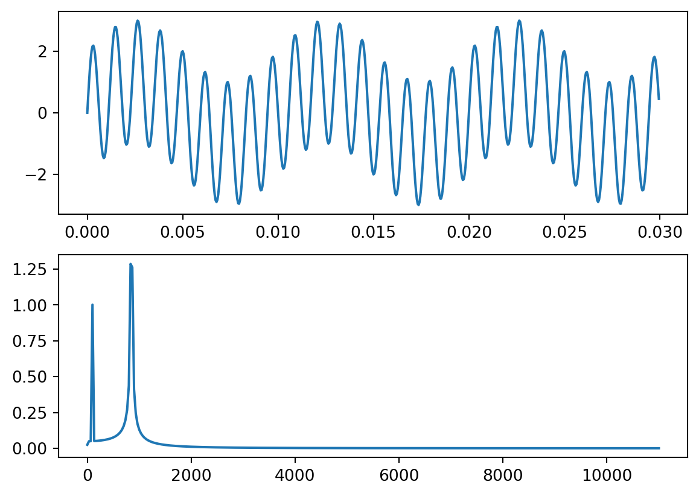

Composite sinusoidal signal generation and frequency spectrum
Starting with a simple example to familiarize ourselves with the digital signal processing API available in the SciPy library
#!/usr/bin/env python3import datetimeimport numpy as npimport scipy as spimport scipy.fftpack as fftpackimport pandas as pdimport matplotlib.pyplot as pltfs =22000# sample frequencytstep =1/ fs # time intervalf0 =100# signal freqN =int(3* fs / f0) # number off samples# time stepst = np.linspace(0, (N -1) * tstep, N) # time stepsfstep = fs / N # frequency intervalf = np.linspace(0, (N -1) * fstep, N) # frequency intervaly1 =1* np.sin(2* np.pi * f0 * t)y2 =2* np.sin(17* np.pi * f0 * t)y = y1 + y2# plotfig, ax = plt.subplots(nrows=1, ncols=1)ax.plot(t, y)plt.show()# FFT ---------------------------------# perform fftX = np.fft.fft(y)X_mag = np.abs(X) / Nf_plot = f[0:int(N/2+1)]X_mag_plot =2* X_mag[0:int(N/2+1)] X_mag_plot[0] = X_mag_plot[0] /2# plotfig, [ax1, ax2] = plt.subplots(nrows=2, ncols=1)ax1.plot(t, y, '-')ax2.plot(f_plot, X_mag_plot, '-')plt.show()print("arrays shapes: t and f_plot ")print(t.shape, f_plot.shape)


arrays shapes: t and f_plot
(660,) (331,)
Frequency spectrum using FFT
#!/usr/bin/env python3import datetimeimport numpy as npimport scipy as spimport scipy.fftpack as fftpackimport pandas as pdimport matplotlib.pyplot as pltimport pyarrow as pafrom datafusion import SessionContext# plt.style.use('seaborn-poster')dash_line ="-"*30ctx = SessionContext()# There is a thousand parquet files in this directoryd ='../data/reusable/60m/'ctx.register_parquet("soma", d)sql_cmd =""" SELECT year, week, month, day, ts, value FROM soma WHERE ts > 0 -- 1663368556001001 AND dsuuid = 'DataSource_00f837fb-8c29-4123-ab02-51bb110f0f44'ORDER BY ts LIMIT 2200"""rb = ctx.sql(sql_cmd).collect()t1 = pa.Table.from_batches(rb)df = t1.to_pandas()df.rename(columns = {'ts':'time'}, inplace =True)df1 = df[['time', 'value']]df1.time = df1.time -1551398400000001print(dash_line, "df1.head", df1.head)# -----------------------------------------v = df1['value'].to_numpy()print(dash_line, "\n\nvalues numpy Array:", v)fft = fftpack.fft(v) # Complex Number arrayamplitude = np.abs(fft)print(dash_line, "\n\namplitude = ", amplitude)amp_power = amplitude **2angle = np.angle(fft)sample_freq = fftpack.fftfreq(v.size, 4545.45454545)# print(dash_line, "\n\nsample_freq = ", sample_freq)amp_freq = np.array([amplitude, sample_freq])print(dash_line, "\n\namp_freq = ", amp_freq)# -----------------------------------------amp_position = amp_freq[0,:].argmax()peak_freq = amp_freq[1, amp_position]print(dash_line, "\n\namp_position =", amp_position, "peak_freq =", peak_freq)high_freq_fft = fft.copy()high_freq_fft[np.abs(sample_freq) > peak_freq]filtered = fftpack.ifft(high_freq_fft)print(dash_line, "filtered =", filtered)df2 = pd.DataFrame({'amplitude':amp_freq[0], 'frequency':amp_freq[1]})df2 = df2.loc[(df2['frequency'] >0)]df2.head(256).plot(kind='line', x='frequency', y='amplitude')print("\n\ndf2.describe", df2.describe)
/var/folders/vt/h13jrd7j6p5537xcqs62q6100000gn/T/ipykernel_56489/610960007.py:30: SettingWithCopyWarning:
A value is trying to be set on a copy of a slice from a DataFrame.
Try using .loc[row_indexer,col_indexer] = value instead
See the caveats in the documentation: https://pandas.pydata.org/pandas-docs/stable/user_guide/indexing.html#returning-a-view-versus-a-copy
df1.time = df1.time - 1551398400000001